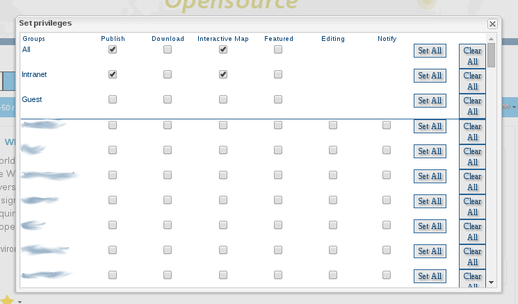
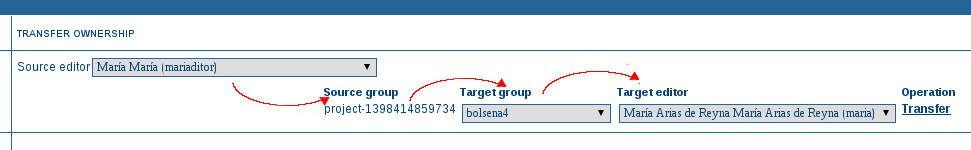

Introduction to technical details
Index
- Search Engine
- Web Map Viewer
- Import/Export metadata
- Medata edit based on templates
- Harvesting
- Roles and privileges
- CSW
- Configuration Basics
Search Engine
As a (geo)data portal, geoNetwork's main feature
is search through metadata
All data is stored on the database,
but it is not used for searching
Search is based on Lucene 4.9.0
Search Engine
Lucene folder path configurable
Configure the fields used on search on index-fields.xsl
Configure the fields exposed on index-fields.xsl
Available through the q API service
Web Map Viewer
Part of the basic User Interface
Allows users to preview data layers
Read-only (view-only)
Geo-related services can be added (like geocoding)
Import and Export metadata
Standard way: CSW-t
Asynchronous way: Harvesting
geoNetwork services:
Harvesting
Periodical jobs that copy data from other catalogs
Periodicity can be defined on simple cron format
Multiple formats on origin
Users will not be able to modify this records, but can duplicate them
Role and Privileges
geoNetwork works with four types of users:
- Registered User
- Editor
- Reviewer
- Administrator
Roles can be defined by group
Role and Privileges
The group All is a generic group for public data

Role and Privileges
Records can be batch moved to another user

CSW
GeoNetwork is compliant with the 2.0.2 version of the specification
http(s)://___/srv/$language/csw
CSW
GetCapabilities: general description of the service
DescribeRecord: information model supported by the service
CSW
GetRecordById: data of the record by identifier. Authentication optional
GetRecords: query the service using CQL or OGC Filter. Authentication optional
CSW
Harvest: Force a CSW harvesting (sync or async). Authentication required
Transaction: interface for creating, modifying and deleting catalogue records. Authentication required
Configuration Basics
Based on database settings table and xml files (config*.xml)
Latest versions rely more on Spring library
- Authentication & Security (LDAP, Shibboleth, CAS)
- Database connections
- Definition of Privileges
Configuration Basics
Big catalogs (+100.000 records)
- Use PostGIS index instead of Shapefiles
- Tweak postgreSQL with more memory (spatial queries)
Large catalogs (+300.000 records)
- Consider clustering
Huge catalogs (+1.000.000 records)
- Check inodes (number of files)
- Consider use SOLR instead of Lucene